Night falls in Manila.
Brands, posters, films and apps by Lana Huertas, asleep until the moon is up.
The night almanac
UI/UX and graphic design, film and code, made in Manila by moonlight.

Night falls in Manila.
Brands, posters, films and apps by Lana Huertas, asleep until the moon is up.